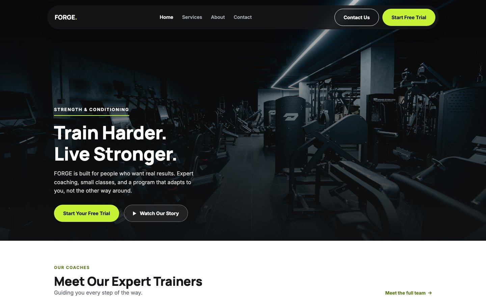
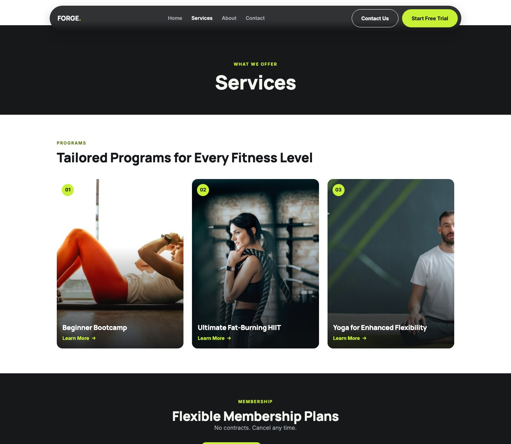
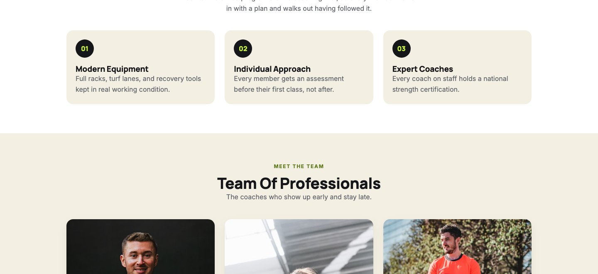

FORGE Fitness is a fictional gym I built as sample work for 21 Connect Digital, targeting gym and studio owners as prospective clients. What makes it worth a case study isn't the fictional brand, it's the process: three complete visual redesigns in one continuous session, each one a full rebuild of the design system, not a palette swap, plus real licensed photography, and accessibility fixes caught and corrected along the way. It's a demonstration of range and speed, not a finished product pretending to be client work.
21 Connect Digital needed a strong sample project aimed at gym owners, the kind of prospect who wants to see a site that looks like it belongs to a real, modern gym before they'll trust an agency with their own brand. A generic template wouldn't sell that. It needed to look purpose-built.
I started from a reference screenshot of an existing gym template for layout inspiration, then diverged from it fully once real content, a real palette, and real photography came in. The goal was never to copy a template, it was to prove I could take a rough visual direction and turn it into something original and production-ready.
Most portfolio pieces show one finished design. FORGE went through three, each a genuine rebuild:
Each version kept the same underlying HTML structure and copy, only the design system changed. That's what let three full redesigns happen in one session instead of three separate projects.

Every photo on the final site, six trainer portraits, three program shots, two facility images, is a real licensed photo, not a placeholder. Sourcing them took real vetting, not just picking the first result:
The result is a "team" of six coaches who look consistent, professional, and specific to this brand, not generic stock filler.

Two real contrast failures shipped in earlier versions and got caught before this write-up, not after:
Also built in from the start: visible focus rings that adapt between light and dark sections, 44px minimum touch targets on mobile controls, and a prefers-reduced-motion override. None of it is decorative, all of it is testable.
FORGE is plain HTML, CSS, and JavaScript, no React, no build step, no dependencies. For agency sample work that needs to be forked into a new client vertical next week, that's a feature, not a limitation. Anyone can open the files and understand them immediately, and the whole thing deploys to Netlify by dragging a folder.
The interesting part of this project isn't the final gym website, it's that the final version bears almost no resemblance to the first one, and that's the point. Client direction changes. Being able to take "change the colors" or "make it feel different" and deliver a genuinely different, coherent system, fast, is the actual skill being demonstrated here.
"Three redesigns in one session isn't indecision. It's proof the structure underneath was solid enough to carry any design on top of it."